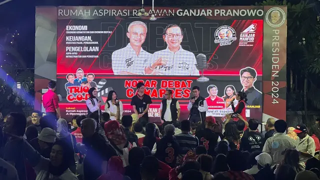

Nobar Debat Bersama Relawan, Kubu Ganjar-Mahfud: Gibran Aksi Teratrikalnya Keren
Tanggal :
23 Des 2023, 01:20 WIB
Jakarta Sekretaris Tim Koordinasi Relawan Pemenangan Pilpres 2024 (TKRPP) PDIP, Deddy Yevri Sitorus,
menyatakan cawapres nomor urut dua Gibran Rakabuming Raka selama debat hanya sedikit menyampaikan gagasan.
Hal itu disampaikan Deddy setelah menyaksikan debat cawapres bersama organ sukarelawan di Rumah Aspirasi
Sukarelawan Ganjar-Mahfud 2024 di Jakarta Pusat, Jumat malam (22/12/2023). Menurut Deddy, Gibran hanya
banyak menampilkan teatrikal.
"Gibran aksi teatrikalnya keren. Jam belajar cukup baik," kata Deddy.
Sementara itu, Deddy menilai cawapres nomor urut satu Muhaimin Iskandar hanya menyampaikan gagasan secara
normatif. Menurut dia, hanya Mahfud yang menyampaikan visi-misi dengan jelas.
"Kita berharap masyarakat melihat kedalaman, bukan hapalan," ujar Deddy.
Deddy mengatakan sejak awal hingga akhir debat, Mahfud mampu secara konsisten menyampaikan komitmen
tentang ekonomi kerakyatan. Mahfud, lanjut dia, tak ingin ada pihak yang menjadi maling di APBN dan
mengupayakan terciptanya lapangan kerja.
Sementara itu, juru bicara Tim Pemenangan Nasional (TPN) Ganjar-Mahfud, Seno Baskoro, menilai hanya Mahfud
yang berbicara dengan bahasa rakyat.
"Saya rasa yang bicara bahasa rakyat, dipahami kita semua adalah Pak Mahfud," kata Seno.
Seno menilai Mahfud yang berhasil menyampaikan gagasan ekonomi rakyat dengan kosakata masyarakat umum.
Di sisi lain, Seno melihat Mahfud berhasil memaparkan komitmen mengenai pemberantasan korupsi dan adanya
maling yang membuat kebocoran APBN.
Mahfud, lanjut dia, juga sukses menyampaikan program ekonomi kerakyatan yang ingin membuka 17 lapangan
kerja, mendirikan puluhan puskesmas serta sekolah. Program-program itulah yang akan membuat rakyat bisa
maju dan tak sekadar makan siang.
"Bisa beli makan pagi, sore, siang, malam karena korupsi disikat," tandas Seno.